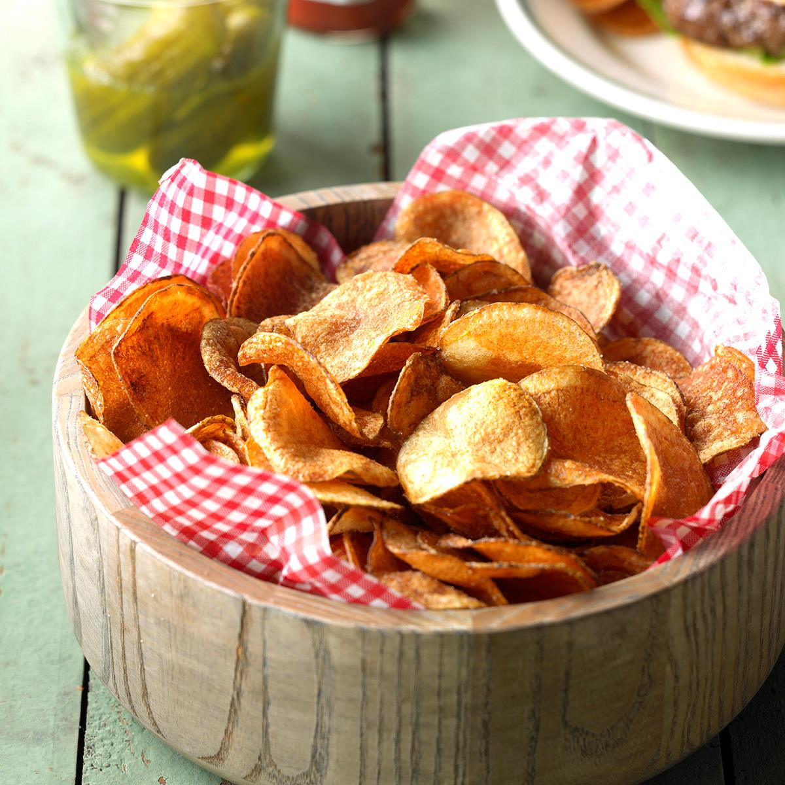

Home Style Potato Chips
Home made potato chips are fun and easy to make, guaranteed they wont last long!
Thickness of the chip is dependant of your preference, I like to use olive oil for frying,
but you can use corn oil, peanut oil or even vegetable oil for this recipe!
~Prep Time~
- Prep: 40 mins
- Cook: 20 mins
- Serves: 8
- Total 1 hour
~Ingredients~
- 4 medium potatoes, peeled and sliced thin
- 3 tablespoons salt, plus more to taste
- 1 quart oil for deep frying
~Steps~
- Transfer potato slices to a large bowl of cold water as you slice them
- Drain slices and rise under cold water. Refill the bowl with water, add 3 tablespoons salt,
and put slices back in the bowl. Let potatoes soak in the salty water for at least 30 minutes
- Drain and rise slices again, pat dry
- Heat oil in a deep-fryer to 365 degrees F (185 degrees C)
- Working in small batches, fry potato slices until golden brown.
Remove with a slotted spoon and drain on paper towels
- Season potato chips with additional salt if desired
